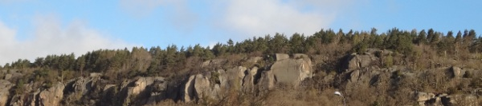
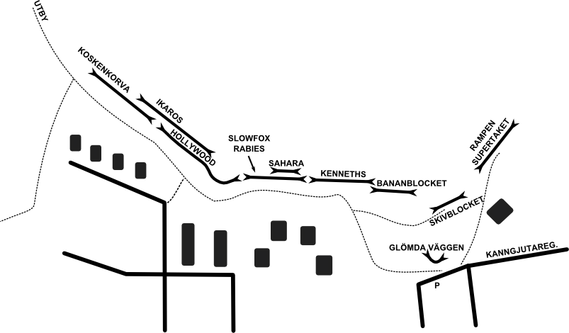
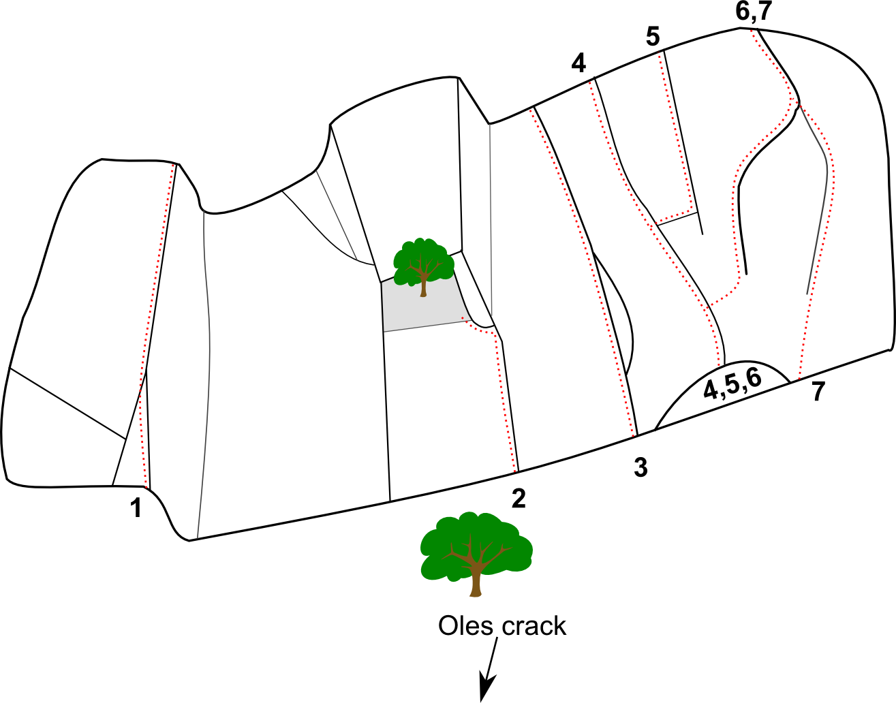

Fjällbo
Lat: 57.74342671610039
Long: 12.062945365905761
Kategori:3 stjärnor
<div style="float: right; margin-left: 10px; padding: 3px; border: solid 1px #cccccc;">
<googlemap width=400 height=350 lat="57.74342671610039" lon="12.062945365905761" zoom="14" type="map">
57.74342671610039,12.062945365905761,Fjällbo
</googlemap>
</div>
Allmänt
Fjällbo är den del av Utbybergen i Göteborg som vätter mot E20. Ligger på lätt promenadavstånd till
Utby
,
Gärdsås
,
Resilin
, mm. Klättring av all möjlig karaktär, men ofta av lite äventyrlig sort. Trad, utom Rabiesväggen som är en sportklippa.
Karaktär
Ca 180 leder. Bitvis äventyrligt med möjlighet till turer med flera replängder eller utdragna enkelrepor. Fjällbo är på vissa ställen ganska hylligt, vilket gör att man ibland behöver pitcha sig upp för att komma åt godbitarna.
Områden som Koskenkorva, Hollywoodväggen och Skivblocket lämpar sig för topprep om man vill (tänk på att inte toppa direkt i firningsankarna, sätt egna karbiner för att undvika slitage), i övrigt krävs mestadels ledkunskaper. Glöm inte att ta med några 60-slingor.
Att rekommendera är
Bananblocket
,
Hollywoodväggen
och
Skivblocket
Bultade turer lite här och var, men framför allt på
Rabiesväggen
.

Access
Översikt

Vänster om koskenkorva
-
- Vårdhemslabben
- 5-
- Längs med vägen mellan fjällbo och utby, i stora korsningen rakt upp för det uppenbara hörnet
4 odefinierade leder som ingen? vet var de går...
-
- Balans balans hjärnsubstans
- 5+
-
En gissning är att de två sista lederna går från rampen/hyllan på väggen till höger om hörnet där man går upp till toppen på Koskenkorva. Det finns två "linjer" där, ca 2 meter ifrån varandra, som stämmer ungefär med beskrivningarna förutom att de nog är 5-6 meter istället för 7. Även graden stämmer ungefär och att dessa är 7m och de andra är 9m talar för att de är på denna hylla. I så fall borde Ostronet vara "linjen" som toppar ut precis vänster om hörnet. -- Rob
Koskenkorva
Fin klättring i 5:a-registret. För att sätta topprepp går det går att skrambla upp femtio meter vänster om Koskenkorva.
-
- Antabus
- 5-
- Sprickan/diedret vänster om Koskenkorva-lederna.
-
- Skrumplever
- 5-
- Diffus flaklinje på den vänstra delen av väggen. Startar ca 5 meter till vänster om Chivas Regal upp till ett tak, följ sedan flaken upp åt vänster till ett litet tak. Lite cruxig urtoppning som är lättare för längre personer. Mindre runouts på hyfsade säkringar gör den lite mer spännande än de övriga lederna. Osäker grad.
-
- Chivas Regal
- 5
- Den vänstra tydliga sprickan, insteg kan göras i koskenkorva eller via en "groove" strax till vänster under sprickan.
-
- Koskenkorva
- 5
- Den mittersta sprickan, går rakt upp igenom ett buskage strax innan toppen.
-
- Drambuie
- 5+
- Tufft instegscrux följs av lätt hej och hå-klättring till toppen. Inslag av jam.
-
- Gonzo
- 5-
- Börja som Koskenkorva eller Drambuie och efter hyllan på mitten följ traverssprickan åt höger till Hathersages utsteg. Fin och lite känslig jamklättring. Välsäkrad, men man bör vara lite varsam med placeringarna. Framborstad av Robert Andersson, stulen utan vetskap av Anders Nyberg
-
- Hathersage
- 6-
- Den tydliga och inbjudande "hängande" areten mellan Drambuie och Analkonfekt. Klättra först en lätt vägg upp till gräshylla och sen en blöt (nästan jämt) spricka för att ta dig till en kort hangeltravers som leder till areten. Aningen seriös.
-
- Analkonfekt
- 5
- Liten takspricka en bra bit upp på väggen
-
- Babytaket
- 6
- Större takspricka snäppet brevid föregående
-
- Babytaket direkt
- 6
- Istället för att toppa ur som Analkonfekt, följ sprickor och flak längs aréten efter taket. Faktiskt välsäkrat, håller graden och ger leden ett mer värdigt avslut
-
- Till Linnéa
- 4+
- Följer det tydliga diedret till höger om Babytaket. Lång och fin välsäkrad lätt led med svakaraktär. Följer den tydliga areten på sva till en hylla sedan brant rakt upp via sprickor mot stor tall på toppen.
-
- Aquatic Ape
- 5
- Startar på samma ställe som Till Linnéa men viker av åt höger. Upp till en mindre hylla och uppför ett spricksystem mot ett träd men traversera ut åt vänster och gå upp mitt på väggen via lite suspekta flak till en större hylla, och upp i ett hörn till toppen. Lättare variant genom att undvika att gå ut på väggen och istället gå bakom trädet (4+).
-
- En tappad liten blå.
- 5+.
- Säker klättring upp till ett ganska seriöst utsteg. Börja i diedret till höger om Aquatic Ape och klättra därefter lite höger för att komma ut på facet. Avslutas upp på gräshyllan.
-
- Diskbråck
- 6-
- Fortsättning på En tappad liten blå med start från gräshyllan. Starta i den vertikala sprickan lite till höger om toppen på En tappad liten blå. Traversera sedan höger till juggen och avsluta på mestadels knoppar.
-
- Projekt
- ?
- Rapporteras som fin klättring i 6-registret. Förmodligen något sparsamt och svårsäkrad. Har varit projekt sedan i alla fall 1996, men bultarna ser bra ut.
-
- Sans och balans
- 5+?
- Starta vid stora eken som en sva highball. Därefter helt okej säkrat med småkammar! Upp till "taksprickan" och upp till en stor hylla, stand, därefter följer du flaket till toppen.
Ikaros
-
- Guldfinger
- 6+
- Via tvärsprickor upp till toppen. Något seriös.
-
- Vit ambivalens
- 7+
- Spricklinjen som börjar nästan ute på areten. Ett måste för den som behärskar graden
-
- Cro magnon
- 7b
- Areten till höger om Vit ambivalens
-
- Projekt
- ?
- Går upp i en spricka till en svaplatta och upp i taket och ut på väggen via en horisontal spricka och uppför den blanka väggen till tunna flak och sprickor. Väldigt seriös och kanske omöjlig?
-
- Katapulten
- 6
- Lång, varierad och äventyrlig.
-
- Gravitationskallops
- 7-
- Takproblem
-
- Pelle Sanslös
- 6-
- ganska brant klättring på flak, äventyrlig
-
- One move of sex
- 6
- Äventyr
-
- Doktor Pipper
- 7+
- Fin överhängande fingerspricka som börjar bakom ett träd, ofta blöt.
Hollywoodväggen
En fin vägg som ligger lite skuggigt bakom träd.
-
- Beverly hills
- 7-
- En väggtur längst till vänster på väggen som börjar i en spricka genom ett litet tak strax till höger om en stor sten.
-
- Tjille ving
- 7-
- Delikat och tekniskt. Lätt att göra bort sig.
-
- I made this
- 8-
- En seriös vägghistoria som går upp till Hollywoods ankare.
-
- Hollywood
- 7-
- Fin vänsterlutande spricklinje med stor variation. Välsäkrad
-
- Corn flakes
- 6+
- Viker från hollywood där sprickan börjar och sneddar ut till bob hopps ankare
-
- Rosa på bete
- 5+
- Kort sva i början och sen upp i dieder. Ankare finns på toppen.
-
- Doktor Funkenstein
- 7-
- Dubbelsprickor i övre delen
-
- Paraden
- 6-?
- En läng led till höger om Hollywoodväggen som bjuder på fin, kul och lite annorlunda klättring upp till toppen av Fjällbo.
-
- Spriten rädda mig ifrån sporten
- 5-
-
Slowfox
-
- Björn Borgs träracket
- 6+
- Stort dieder till vänster om toblerone
-
- Toblerone
- 6+
- Lång knopptur längs areten, för den som klarar handsvetten.
-
- Slowfox
- 5+
- Flerrepors äventyr med inslag av travers. Många varianter
-
- Excelsior
- 6+
- En lång sprickled som letar sig upp till höger om slowfox, mer info på egen sida.
-
- Teknikmagasinet
- A2(+)/T4/DFU
- Aidlinje mellan slowfoxs två utstegsvarianter, mer info på egen sida.
Sahara
Trad i hårdare grader. Ovanför Rabiesväggen
Rabiesväggen
För ovanlighetens skull i Utby: sportturer i 6a+ till 7b+. Firningsankare.
-
- Åke Ljungbergs led
- 7a+
- Går upp i ett dieder till en lite svaplatta och ett nytt dieder, och går sedan ut mot och längs vänsterkanten av väggen. Mycket fin led med en del ovanliga grepp. Har letts traditionellt, med skyhooks, och då kallad "Hooka Sky". Se [[Diskussion:Fj%C3%A4llbo|Diskussion]] om namnet.
-
- U-sväng
- 7b+
- Fortsättning på Stopplikt
Kenneths led
Lederna från Bohemia och högerut startar på hyllan ovanför "halvkaminen". Klättra upp från blockets högra sida. Mellan denna hylla och Rabiesväggen ligger en hel drös äventyrliga, längre turer.
-
- E-tur
- 8-/8
- Till höger om Mowitz. Markfallspotential från 15 m (därav namnet kanske?). (OBS! Misstänker att detta är felrapporterat och är fortfarande ett projekt, och då inte Andreas. Projektet ligger till höger om Fredman och är möjligen numer öppet --Rob)
-
- Fredman
- 5+
- Spricka rakt upp, via travers upp till ett stort träd. Alternativt utsteg är att fortsätta klättra rakt upp, och klättra på gräset (brant och osäkrat) till trädet
-
- Grooven
- 5
- Äventyrsled. Kaminklättring och route finding.
-
- Dessertören
- 6+
- På väggasvsnittet till höger om grooven går en tydlig överhängande spricka som bjuder på fin klättring, efter denna blir det lite äventyr upp till toppen.
-
- ?
- 6+
- Till höger om dessertörens urtoppning ligger en krystad bultad utstegsvariant. förändrar inte graden, bara upplevelsen...
-
- Rödtröjan
- 5-
- Ett stort dieder med bred spricka som börjar en bra bit upp efter en massa brötiga hyllor.
-
- Ulf och Susannes led
- 4+
- Leden börjar i ett hörn med två pararella sprickor upp till en björk. Ifrån björken skall du klättra på vänster vägg upp till en kamin/hål/grotta (stand). När du har gått igenom grottan är det rakt upp!
-
- Zeke
- 6-
- Zeke startar på den stora hyllan där Sodom slutar. I vänsterkant på hyllan följ spricka upp till björk, byt spricka och klättra till ett litet tak, följ diedret upp.
-
- Kronjuvelerna
- 6-
- Startar i sprickan höger om Zeke och går efter sprickan ut åt vänster på areten. Bättre snyggare och vackrare än Zeke
-
- Spider tony
- 6-
- Startar vid överhänget vänster om starten på Sodom
-
- Sodom
- 5
- Först upp via den vänsterlutande fingersprickan till en hylla. Dra dig upp till nästa hylla till en perfekt handjamspricka.
-
- Saar vi! Gör vi!
- A3(+)
- På det stora blocket nedanför Kenneths led. Starta på en hylla 1/2 m ovanför marken på väggen till vänster om kaminingången in mot Kenneths leds hylla. Börja med den överhängande hand- och fistjamsprickan upp till hyllan. Sedan en eller ett par meter till höger och ut runt om läppen och upp i den tunna sprickan. Följ sedan sprickan rakt till toppen av blocket. En mycket rolig aidtur med intressanta placeringar. Fin "head groove" i slutet. Ta med dig Rurp's, heads och det vanliga.
-
- Kenneths snedsteg
- 6-
- En lång, sned spricklinje som börjar strax till vänster om sodom, och korsar Bohemia och Kenneths led. Avslutas i ett träd ovanför bluetracks dieder, eller med fördel upp i Bluetrack (eller någon annan led på väggen...). En äventyrlig led, inga stjärnor direkt... möjligen ledd tidigare.
-
- Antons led
- 5
- Travers nedåt vänster från Kenneths-hyllan, runt areten och upp i diedret. Avsluta med sprickan på den knoppiga och laviga högerväggen. Något svårsäkrad. Den avslutande sprickan blir också en bra länk mellan Sodom och Gomorra, dvs ett fint trerepors äventyr.
-
- Bohemia
- 6-
- Vägg- och sprickklättring som startar på hyllan en meter ner, längst till vänster ifrån hyllan på Kennets led, kort travers utåt till ett exponerat utsteg och sedan rakt upp. 1bb
-
- Beatnik
- 6-
- Startar till vänster om Kenneths, knoppklättring. 2bb
-
- Kenneths led
- 5
- Klassisk led i spricksystem, björk växer mitt på leden.
-
- Blue Track
- 6
- Startar i diedret till höger om Kenneths. Tunn väggklättring i utsteget.
-
- En lättnadens suck
- 6
- Startar precis i högerkanten av anmarschkaminen till kennets led. En inbjuden ganska bred formation en bit upp som påminner lite om Boa-constrictor/pyton visar vägen. Standplats på en hylla i ett litet hörn efter den tydliga formationen. Från stand gå upp och snett åt vänster ut på ett slabb, samla mod och sikta mot en bred spricka i en båge. sedan rakt upp. Ledens namn uppnås när du får in den första bra säkringen efter slabbet.
Ovanför Kennets led finns följande två leder:
-
- Invariant
- 5+
- Leden går några meter vänster om Gomorra
-
- Gomorra
- 5-
- Startar i hörnet, har ett utmärkt firningsankare
Bananblocket, nedre del
Hitta hit:
Från parkeringen på Kanngjutargatan följ stigen uppför backen. Där stigen viker av neråt vänster sneddar du in åt höger och ser snart den uppenbara laybacksprickan Oles Crack. En hög med stora boulderblock ligger dock i vägen, det kan vara lite svårt att hitta en väg in till instegen.
-
- Runt hörnet
- 5
- Går upp till Ulf Björnbergs led
-
- Anorexia
- 7
- Brant och välsäkrad klättring några meter till vänster om Oles
-
- Oles crack
- 5+
- Uppenbar spricka som laybackas eller jammas upp till taket, där man gör kort travers och mantling. Välsäkrad men lite tung för graden.
-
- Robins crack
- 5+
- Varierande klättring upp till insteget på Bananblocket. Start i en tydlig spricka bakom ett träd, strax vänster om ett tydligt dieder.
-
- Lato
- 6-
- Startar som Robins crack men går rakt upp längs med sprickan mot björken istället för diedret
-
- Fallos
- 6-
- Handjamklättring i diedret höger om Robins crack följt av en mantling, därefter lätt till toppen. Helt okej
-
- Sir Lancelot
- 5
- Den svaiga dubbelsprickan 4 meter höger om Fallos, upp till ett par gräsiga hyllor till ett träd. Svårare än den ser ut med överraskande sekvenser
Bananblocket övre del
Fina leder i 6-registret, mycket jam och knoppar.
Hitta hit:
Från parkeringen på Kanngjutargatan följ stigen upp i backen och sväng höger in i skogen där stigen viker av vänster. Passera några stora boulderblock och vik av vänster in mot väggen direkt efter dessa. Härifrån kan man antingen leta sig upp på hyllan direkt under Lille petter spilleman, eller leta sig fram till Oles eller robins crack och klättra någon av lederna där.

- 1
- Ulf Björnbergs led
- 6+
- Hette tidigare Svart magi
-
- Jordiga sprickan
- 5
- Okej klättring om du tycker om smuts i handjam-sprickan vänster om tunnsprickan upp till tallen.
- 2
- Tunnsprickan
- 5
- Fin spricka som går upp till den stora tallen, ganska krävande för en "femmaklättrare" Utstegsvarianter finns, längst till vänster på hyllan 4, vänstra diedret 5, högra diedret 6, rakt upp (undviker hyllan) 6
- 3
- Bananblocket
- 6-
- Vacker linje som lätt känns igen pga ett bananformat block som jammats fast i nedre delen av sprickan
- 4
- Stopper
- 6
- Elegant Jamspricka.
- 5
- Stepper
- 6+
- Samma start som stopper, men traverserar sen över i högra sprickan. Pumpigt Jammande, välsäkrad.
- 6
- Svarta diedret
- 5
- Samma start som stepper stopper men traversera ut åt höger, bjuder på run out, sva, överhäng, välsäkrat. Mer kan man inte begära av en femma.
- 7
- Lille petter spilleman
- 7-
- En tunn bågspricka som splittar väggen till höger om svarta diedret. Ok säkrad
Bananblocket, höger
-
- Vilse i källaren
- 7
- Leden går upp till insteget på Borta med vinden
För att komma till följande leder får du skrambla upp lite, från vänster till höger:
-
- Borta med vinden
- 5
- Startar längst ut till vänster på den smala hyllan.
-
- Lilla Hörnet
- 4-
- Det supersnygga diedret/sprickan
-
- Skitfågel
- 7
- Ute på Areten
-
- Fjällbos fingerspricka
- 6
- Den första sprickan efter areten, klassiker!
Bananblocket höger, nedre del
Nytt område som hittas nedanför Klyftan, Mot dag och de lederna.
- 1
- Café Stålborsten
- 4+
- Aréten längst till vänster i detta område
- 2
- Kaffekilen
- 5
- Den flarade sprickan fem meter till höger om Café Stålborsten, ganska kul klättring.
- 3
- Kanelkam
- 5-
- Leden är ganska lös, så det gäller att se upp med var man sätter sina säkringar.
- 4
- Kardemummasele
- 5+
- Lätt klättring längs med horisentella sprickor upp till ett lite brantare parti, in i ett minidieder.
- 5
- Säkringsapan
- 5+
- Scrambla upp till det branta, klättra vänstra taksprickan. Ifrån hyllan följer man spricksystemet rakt upp mot enen ungefär. En blivande klassiker?
- 7
- Vilket avslut!
- 5-
- Spricka/formation 2 meter vänster om Joannas led (a.k.a. Fingerspricka nr3) upp mot ett block och förbi
- 8
- Fingerspricka nr3
- 5
- En fin fingerspricka som bjuder på klassisk utbyklättring i stil med mirceas och fjällbos fingerspricka. Leden hittas mitt emellan cafe stålborsten och gunnars skräck, ett tiotal höjdmeter upp i slänten. Toppar ut precis vid bondage, vilken man med fördel kan klättra som urtoppning.
-
- Djungelvrål
- 5-
- Sprickan 2 meter till vänster om Zoo-apan, ingen klassiker, men kul att göra
-
- Zoo-apan
- 5
- Dieder/arete, hittas 30 meter vänster om Sjuksköterskearmén.
Skivblocket
Klättring på och mittemot det vassa höga blocket som kalvat från huvudväggen. På själva skivblocket finns firningsankare. Ovanför Caligula och Nero likaså.
-
- Sjuksköterskearmén
- 6-
- Den svaga aréten till vänster om Gunnars skräck. Startar strax till vänster om aréten och därefter höger och upp via tvärsprickorna (små säkringar)
-
- Gritslabben
- 5+
- Slabben mitt emellan sjuksköterskearmen och Gunnars skräck. Fin klättring för den som vill ge sig hän
-
- Gunnars skräck
- 5/5+
- Sva i ett dieder upp till en platå med ett bultat ankare. Lite tyngre och svårare klättring på 2:a replängden.
-
- Kanten
- 6
- Varierad och brant.
-
- Nosferatu
- 7-
- Går på facet av skivblocket. Ankare med 2 bultar finns ovanpå blocket.
-
- Ajax
- 7b
- Väggen höger om Nosferatu
-
- Supernova
- 7+
- Den tydliga areten.
-
- Bantaren
- 5+
- välsäkrad klättring inne i kaminen
-
- Gladiatorn
- 6b
- Dieder och väggklättring.
-
- Skivblocket
- 5
- Lättaste vägen upp på skivblocket. Finns en toppbok på toppen
-
- Quo Vadis
- 6
- Startar lite höger om gladiatorn. Små säkringar underlättar ;
Följande leder hittas ovanför Caligua och Nero:
-
- Bob sportig
- 6
- Går ca 15 m till vänster om insteget på Limus. Fin och lite spännande klättring på lister. Säkring i tvärsprickor med run-out på slutet
-
- Limus bror Linus
- 3+
- Samma start som Limus men rakt upp
-
- Limus
- 5
- Upp tre meter i klockrena handjam och traversera höger i en välsäkrad rolig spricka, och sedan spricka rakt upp i fin klättring. Direktinsteg finns också (Svårare)
Rampen
Backa ut ifrån skivblocket och du hittar ett firningsankare som tar dig ner till hyllan, alternativt frisola (ca grad 4) upp till hyllan. Alla ledernas namn står med målarfärg vid insteget!
Supertaket
Tätaste området med aid-leder?
-
- Träsmak
- A2/T3
- Går mellan Nålsögat och Mammas Nya Kille. Insteg via en head-spricka upp till en delvis rutten horisontell spricka. Följ sedan den högra och lite bredare sprickan snett upp till höger till utsteget. Följande prylar användes: 2st 5-6mm aluheads, 1 Bugaboo #3, 1 Lost Arrow #1, 1 Angle #2, 1 kilset inkl små stål-/kopparkilar samt kamsäkringar för 1cm till 5cm sprickor (dubbelt av de minsta rekommenderas).
-
- Vykortet
- C2
- Startar i ett litet hörn någon meter till vänster om Frimärkets insteg. Efter hörnet görs en travers åt höger till det stora hörnet som utgår från vänsterkanten på Frimärkets tak. Upp i detta och vidare rakt upp via sprickor till toppen. Mestadels mindre kilar några halvkassa i småkluriga placeringar, kamsäkringar samt en cam hook (som användes för att göra den clean).
-
- Supertaket
- 7-
- Sprickan som klyver taket, tidigare grad A2+. Efter taket ganska dålig klippkvalité.
-
- Gumminacken / Pippi Pelikan
- 8b
- Hyfsat spektakulär med dubbla fotlås. Sammanlagt 12 hårda move.
-
- Trappan
- 5b+
- Leden går på längst till vänster på väggen efter Pippi Pelikan, upp till ankaret.
-
- Smala vägen
- 5+
- Längst in i hörnet.
-
- Pastis 51
- 5
- Leden är på väggen till höger om Smala vägen vid Supertaket och följer spricksystemet som går något till vänster om Alfa Centauri. Samma insteg och utsteg som den senare. Det går att använda bulten vid insteget. Man bör undvika att säkra i blocket 4 meter under utsteget. Namnet kommer från förstebestigarens ålder.
-
- Alfa Centauri
- 6a
- Går längs med Areten. Klätterbar på höger och vänster sida. Läskigt bultad.
Glömda väggen
En liten sportvägg med turer från 6a och uppåt. Lederna är inte roliga, men tekniska, jämna och trevliga. Ligger en våning ner från Skivblocket, ligger vid Kanngjutaregatan. Barn- och barnvagnsvänligt.
Isklättring
Kalla vintrar uppstår det några fina isar att klättra på. Höger om Hollywoodväggen kan det uppstå mer eller mindre feta isar som går att bestiga i varierande svårighetsgrad. Det går också att klättra till bergets topp via hyllsystem. De sista 10m, som ibland går i ett dieder, är faktiskt mycket fina. Här finns goda möjligheter att toppa.
Sommarleden Smala leden sv5+ fryser ibland till hyggligt. Den har ett tunnt svaigt insteg som vanligen är osäkrat, kan undvikas genom att scrambla sig upp från höger. Sen är själva islinjen 15-20m, smalnar av och brantar till sig betänkligt på slutet, säkras med skruv och/eller klippsäkringar.
Leden som heter Grooven på sommaren kan ibland bilda en brant och lång ispelare. Denna leds med inslag av klippsäkringar vid tunn is, men kan ibland ledas på skruv. Undvik gärna att toppa - spara den till ett lead-försök istället!
De båda närliggande diederformationerna intill Grooven kan också få hyfsad is.
Leden till vänster om Trotskys (Grooven) är Larssons ränna. Den har en brant och lite bökig start, sen ut till vänster på tunnt sva, originalinsteg till vänster alternativt insteg till höger. Leden blir lättare desto högre upp du kommer och delas med fördel upp i två replängder. Säkras förhoppningsvis(!) med någon skruv, annars bara klippsäkringar och slingade träd. Numera även ett alternativutsteg till vänster, brant men välsäkrad mix, passa en del löst material bara.
Enligt amerikansk terminologi så skulle möjligen några av lederna ha ett R/X vid tunna förhållanden så ha gärna lite marginal och glöm inte klippracket innan ni går på den skarpa änden!
-
- Fulväggen
- m3/m6/wi2/wi3
- Väggen mellan Utby och Fjällbo, höger om trappan om man ska till Övre väggen kan bilda is.
category:Multipitch
category:Trad
category:Vertikalt
Kategori:Göteborg
Kategori:Is